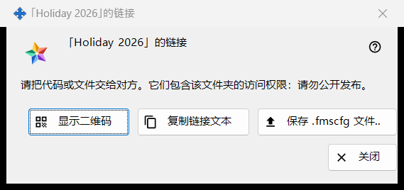
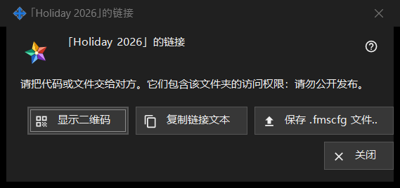

文件夹链接
用途说明
把一个已发布的文件夹交给在交换服务器上没有账户的人：以 QR 码、链接文本和 .fmscfg 文件的形式。在「交换账户中的我的共享文件夹」组中点击「创建链接..」或「新建链接..」后会打开此窗口；在文件夹的「提供外部访问..」窗口中点击「显示二维码 / 代码..」也会打开。在当前程序中这两个命令都处于禁用状态，因为不提供面向账户之外人员的访问；本页描述的是链接存在时窗口所显示的内容。


操作顺序
- 选择一个已发布的文件夹，点击「创建链接..」（要替换旧链接则点击「新建链接..」）。
- 阅读窗口顶部的说明。
- 用下列方式之一交出链接：「显示二维码」、「复制链接文本」或「保存 .fmscfg 文件..」。
- 点击「关闭」。
界面元素
窗口何时可用
只有刚创建或已存在的链接才会有此窗口。在不提供面向账户之外人员的访问期间，「创建链接..」和「新建链接..」处于禁用状态，其下方的说明给出原因，窗口不会打开；「显示二维码 / 代码..」同样禁用。「删除链接」仍然可用。
顶部的说明
说明写道：请把代码或文件交给对方。它们包含该文件夹的访问权限：请勿公开发布。谁持有 QR 码、链接文本或文件，谁就能打开该文件夹。链接文本不会显示在屏幕上。
显示二维码
在放大窗口中打开 QR 码图片。只有成功生成 QR 码时才会出现该按钮；若链接文本过大、无法放入 QR 码，则提示：代码过大，无法生成 QR 码 - 请使用文件。
复制链接文本
通过受保护的途径把链接文本（以 FMSSFTP2: 开头）放入剪贴板，使其不进入 Windows 剪贴板历史记录和云剪贴板，并提示：链接文本已复制。只有链接带有文本时才会出现该按钮。
保存 .fmscfg 文件..
为这一个文件夹保存一个设置文件，仅其所有者可以读取。窗口会报告「文件已保存：」并附上路径，或报告「无法保存文件。」只有成功生成文件时才会出现该按钮。
新建链接与删除链接
这两个命令都属于该组，而不属于此窗口，并且都会先询问，默认答案为「否」：「新建链接..」警告之前所有的 QR 码和文件都将失效，「删除链接」警告随该链接发出的所有 QR 码和文件都将失效。
关闭
关闭窗口，并清除其中的链接文本、文件内容和 QR 码图片。